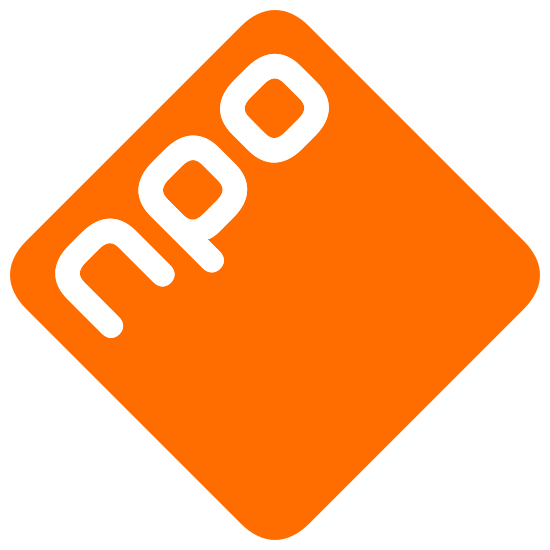
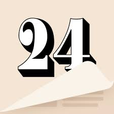
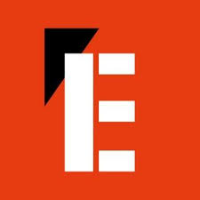
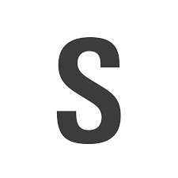
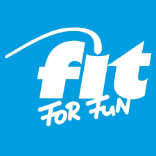
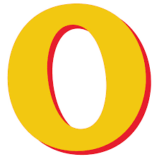

News
-
NRC
-
Telegraaf
-  NPO
-
WSJ
-
The New York Times
- The Times
- Time
-
The New Yorker
-
Slate
-
Economist
-
 Bloomberg
Bloomberg - MarketWatch
- Financial Times
- Les Echos
-  Il Sole 24 Ore
- HBR
-
 MIT SMR
MIT SMR - Le Point
-  L'Express
- Le Monde
- Le Figaro
-
DER SPIEGEL
-
ZEIT
-
la Repubblica
-
Corriere della Sera
-
EL MUNDO
-
EL PAÍS
-
הארץ
-
 ΚΑΘΗΜΕΡΙΝΗ
ΚΑΘΗΜΕΡΙΝΗ - الجزيرة
- Izvestia
-
 Коммерсантъ
Коммерсантъ
Art&Science
-
 Science
Science -
 Nature
Nature
-
New Scientist
- P.M.
-  Spectrum
-
 Pour la Science
Pour la Science -
 Sciences et Avenir
Sciences et Avenir - Muyinteresante
-
Math News
-
 Quanta Magazine
Quanta Magazine -
Scientific American
-
-
 Aeon
Aeon - Conversation
-
 Smithsonian
Smithsonian - Sciences Humaines
- Philomag
-
 London Review of Books
London Review of Books -
WELT
-
 El Cultural
El Cultural
-
 Gramophone
Gramophone -
 Artforum
Artforum
- Artnet
- Connaissance des Arts
-
 WELTKUNST
WELTKUNST -
 Art and Antiques
Art and Antiques - Il Giornale dell'Arte
-
Muscle & Fitness
-
Runner's World
-  Fitforfun
-
Psychologies
- MerciPourLinfo
-
National Geographic
-
 Outdoor Life
Outdoor Life
-  Outside